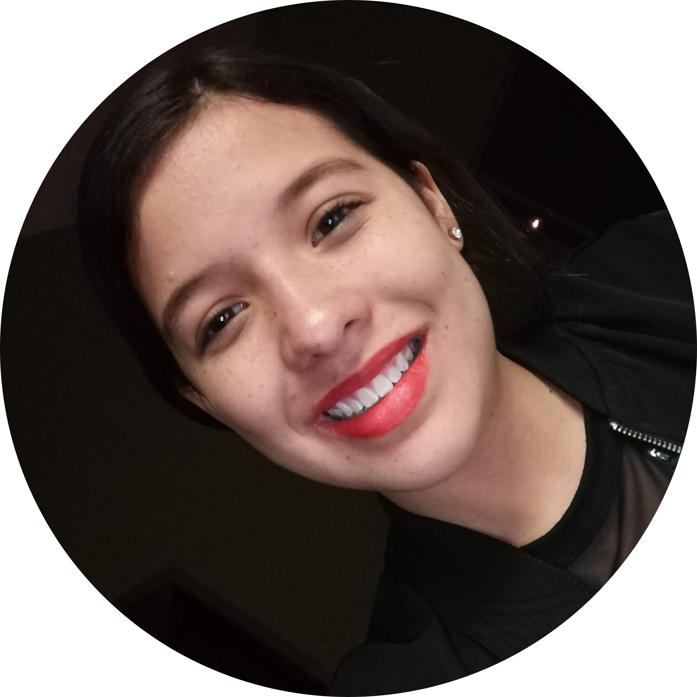

Hola.
Soy estudiante y emprendedora. Estoy aprendiendo programación y quiero fundar mis propias empresas.Yo❤️intentar las cosas .
Mis habilidades.

-
Desarrollo Web
Inicie aprendiendo en la escuela y luego decidí probar con cursos en línea, estoy en el camino de formación.
-
Robotica educativa

Arduino, NXT y EV3 de Lego
-
Liderazgo y gestión

Me gusta la gestión de proyectos y el liderazgo, también he tomado cursos sobre eso.
Proyectos y experiencias.
He participado como participante en EDUROBOTICA (desde el 2016 a la fecha) y como instructora (desde el 2019 a la fecha). En CHICAS STEM en 2016 como estudiante y 2018-2019 como instructora. Como estudiante de IA en el programa piloto
de MICROSOFT para impulsar las habilidades tecnológicas.
🤖👧💻
Como creadora de VERTEK (Un emprendimiento que busca crear aislantes térmicos en forma de placas para hogares y edificios hecho a base de unicel 100% reciclado)y AGROPOLIMEX (Agropolímero Mexicano, material sustituye al unicel hecho de
mazorca de maíz).
🌵🌎
Tuve la oportunidad de hacer dos proyectos WHEELAX (una silla de ruedas inteligente) y AIDE (Una app para ayudar a combatir la violencia de género).
📲👩💻
Alumna en Mujeres líderes en STEAM de U.S Mexico Foundation. Es un programa de mentoría en áreas de Ciencia, Tecnología, Ingeniería y Matemática a nivel nacional. Participante en clubes de ciencia 2019.
🧪⚙️💻🧮